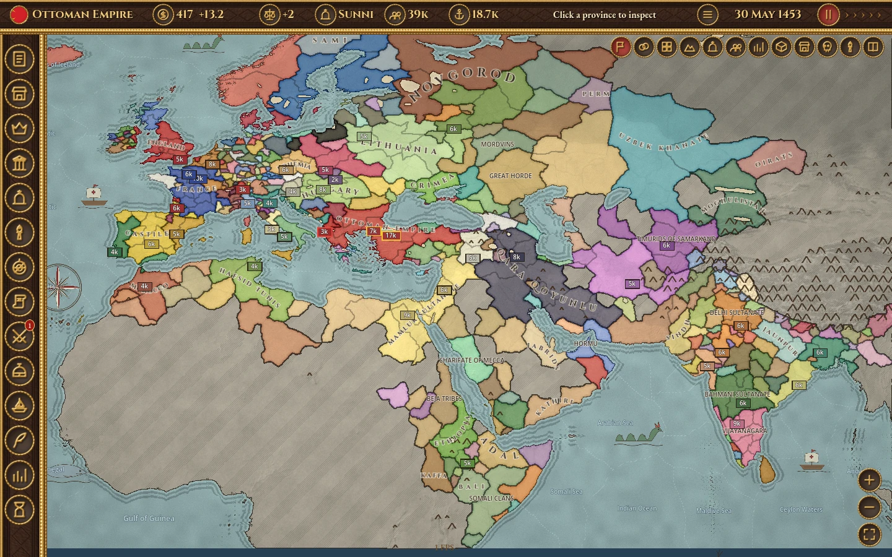

1,378+ Provinces
A Living 1453 World
Explore a seamless map that renders like an antique painted chart from orbit and zooms down to terrain, forests, towns, and moving fleets. Switch effortlessly across political, religion, culture, goods, and market lenses.
- Daily simulation with pause and 5 game speeds
- Reign-by-reign Chronicle, Ledger graphs, and Map Timelapse
- 70+ historical events shaping early modern empires